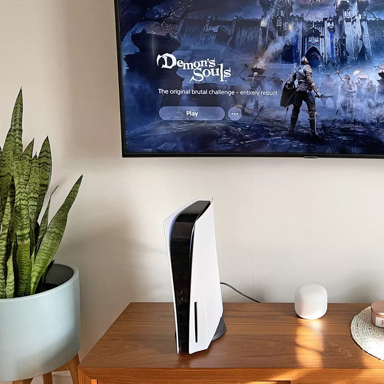
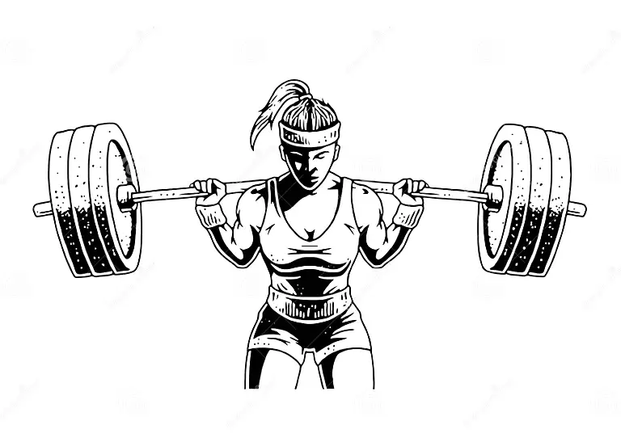

MONIQUE AVILA
I enjoy playing video games in my free time! Playing shooters and rpg games are my top favorites I can get lost in for hours! Some of my favorite games currently are Sims4, COD, God of War, Spider-Man and Dead by Daylight.
One of my all time favorite movies is Resident Evil: Retribution. The fight scenes are epic and I really enjoy the simulation part of it! The resident Evil series is my favorite in the horror genre, but I enjoy watching comedy and anime as well.
Another thing I enjoy is weight lifting. A few years back I competed in competitions in Denver, Colorado where in the two competitions I've competed in I have placed first and second respectively. Currently I just enjoy weight lifting to keep sane 🤪
